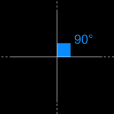
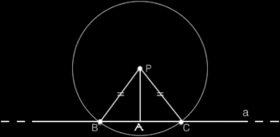
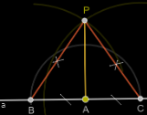
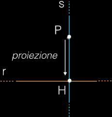
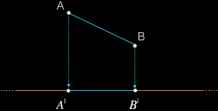
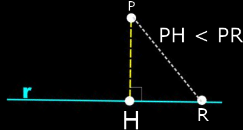

Abbiamo già visto che rette incidenti si intersecano in un solo punto. Esse incontrandosi formano quattro angoli a due a due congruenti in quanto opposti al vertice. Se tutti e quattro gli angoli sono congruenti, allora ognuno è un angolo retto.
Diamo allora la seguente definizione.
Definizione. Due rette incidenti sono perpendicolari se incontrandosi formano quattro angoli retti. □
Per indicare che la retta a è perpendicolare alla retta b, scriviamo a ⊥ b. Due rette incidenti non perpendicolari sono oblique.

Teorema (dell'esistenza e dell'unicità della perpendicolare) Per un punto P del piano passa una e una sola retta b perpendicolare a una retta data a.
Ipotesi. 1 P punto del piano. 2. a retta del piano. Tesi. 1. Esiste una retta b ⊥ a passante per p; 2. la retta b è unica.
L'espressione una e una sola indica due concetti, esistenza e unicità. Nel teorema sono perciò presenti due tesi, che vanno entrambe dimostrate partendo dalle stesse ipotesi.
Dim. Si presentano due casi: il punto P appartiene alla retta a, oppure non le appartiene.
Il punto non appartiene alla retta: P ∉ a.
Dimostriamo la tesi 1. Per dimostrare l'esistenza della retta è sufficiente indicare la costruzione e dimostare che la retta cercata è proprio la perpendicolare. Preso un punto P esterno alla retta:
tracciamo una circonferenza con centro P che intersechi a in B e in C: BP ≅ PC perché raggi;
di BC consideriamo il punto medio A, che esiste ed è unico per il postulato di unicità del punto medio;
congiungiamo P con A.

Per costruzione il triangolo BPC è isoscele e PA è la medesima relativa alla base BC. In un triangolo isoscele la mediana e l'altezza rispetto alla base coincidono, qundi AP è la perpendicolare cercata.
Dimostriamo la tesi 2: Per dimostrare l'unicità della perpendicolare dobbiamo provare che non ne esiste un'altra. Osserviamo che l'angolo BÂC è piatto e la retta PA lo divide in due angoli retti, quindi PA è bisettrice dell'angolo piatto. Per il postulato dell'unicità della bisettrice, deduciamo che la retta perpendicolare ad a passante per P è unica.
Il punto appartiene alla retta: P ∈ a. Dimostriamo la tesi 1: Preso P sulla retta a:

tracciamo con centro P due archi di una circonferenza di raggio r qualsiasi che incontrino a in B e in C: PB ≅ PC perché raggi della stessa circonferenza;
con centri B e C tracciamo due archi di circonferenza con lo stesso raggio, maggiore di r, che si incontrino in D;
congiungiamo D con B e C: BD ≅ DC perché raggi uguali delle due circonferenze;
congiungiamo D con P.
Per costruzione il triangolo BDC è isoscele e DP è la mediana relativa alla base BC, quindi la mediana e l'altezza rispetto alla base coincidono, perciò PD è la perpendicolare cercata.
Dimostriamo la tesi 2. La tesi dell'unicità della perpendicolare si dimostra con un ragionamento analogo a quello utilizzato nel caso precedente. □
Le proiezioni ortogonali e la distanza
Definizione. Dati un punto P e una retta r, il punto H di intersezione tra la retta r e la sua perpendicolare passante per P si chiama proiezione ortogonale di P sulla retta r, o anche piede della perpendicolare condotta da P a r. □

H è la proiezione del punto P su r.
Definizione. Si chiama proiezione ortogonale o proiezione di un segmento su una retta fissata r il segmento della retta r avente per estremi le proiezioni degli estremi del segmento dato.

A'B' è la proiezione del segmento AB su r.
La distanza di un punto da una retta
Teorema. Il segmento perpendicolare condotta da un punto a una retta è minore di ogni segmento obliquod condotto dallo stesso punto alla setessa retta.
Dim. Dimostriamo che la distanza di un punto P da una retta r è la lunghezza minimia fra quelle dei segmenti che hanno per estremi il punto P e un punto della retta r. Consideraiamo un altro punto, R sulla retta r. Il triangolo PHR è un triangolo rettrangolo perchè per ipotesi PH è perpendicolare a r. Quindi l'angolo in R è sicuramente maggiore di ciascuno degli altri due e di conseguenza anche il segmento PR opposto all'angolo R è maggiore di ciascuno degli altri due (. T. xx). □

Definizione. La distanza di un punto da una retta è la lunghezza del segmento che ha per estremi il punto stesso e la proiezione del punto sulla alla retta. □
Definizione. L'asse di un segmento è la retta perpendicolare al segmento nel suo punto medio. □